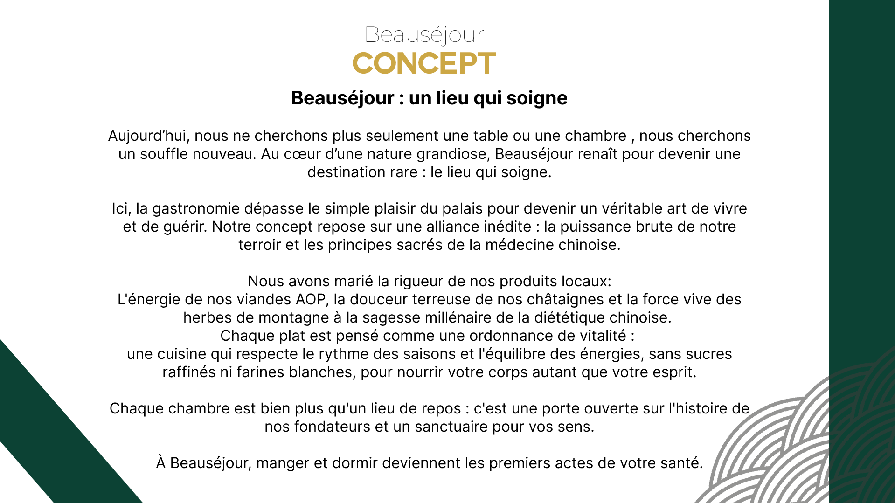
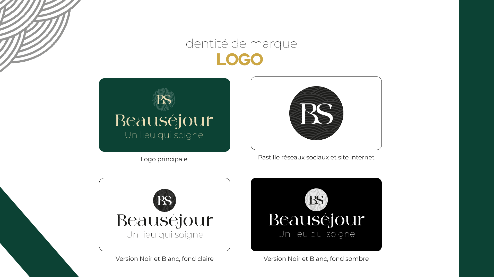
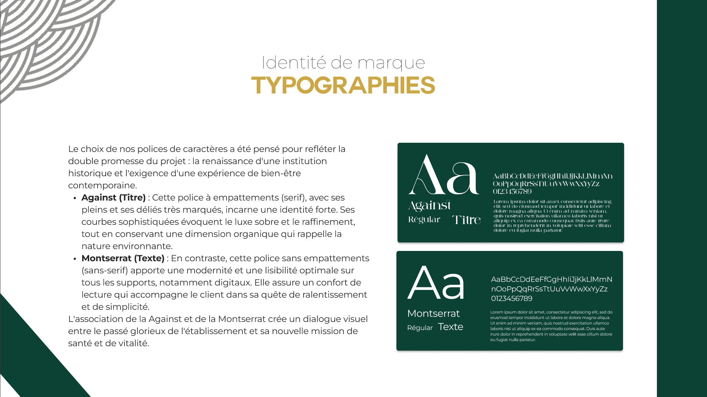

Beauséjour — Renaissance d'une institution :
Projet de groupe (Hackathon de 8 étudiants) : Refonte globale de l'identité de marque et de l'expérience digitale de l'Hôtel-Restaurant Beauséjour à Calvinet.

Le projet et le défi:
Beauséjour est un ancien hôtel-restaurant étoilé Michelin situé à Calvinet, au cœur de la Châtaigneraie cantalienne. Repris par Audrey Allemand et Freddy Piveteau avec une ouverture prévue en mi-juin 2026, l'objectif du hackathon était de repenser totalement son écosystème sur un espace de 900 m² dédié à l'art de vivre.
Le concept artistique et stratégique repose sur le "Terroir Healthy" : croiser la haute gastronomie locale (AOP, viandes, châtaignes) avec la diététique chinoise (sans sucres raffinés ni farine blanche), le tout porté par un storytelling fort basé sur les 5 sens et l'histoire des fondateurs.
ADN Visuel & Cibles
Un luxe sobre, authentique et sain s'adressant à trois profils clés : les cadres locaux (Xavier), les retraités attachés aux traditions (Jeanine & Claude), et les citadins lyonnais en quête d'évasion slow-travel (Laurent & Clara).

1. Identité visuelle & Charte:
Logotype, palette chromatique (anthracite, pierre, doré léger), typographies et guide d'utilisation (Do & Don't).

Logotype
Création de l'identité visuelle principale traduisant le renouveau de l'institution.

Brand Guidelines
Règles d'utilisation de la marque et déclinaisons chromatiques.

Palette de Couleurs
Anthracite profond, doré léger et teintes naturelles inspirées de la pierre du Cantal.

Typographies
Sélection des polices d'écriture pour allier élégance, sobriété et lisibilité.

Guide d'Utilisation (Do & Don't)
Bonnes pratiques d'intégration et erreurs à éviter pour préserver l'image de marque.

Assets Graphiques
Motifs et éléments visuels d'accompagnement de la charte.
2. Supports Print & Papeterie:
Conception des cartes de visite, des cartes de menu et des flyers promotionnels pour le lancement.

Cartes de Visite
Papeterie professionnelle pour les associés (Audrey et Freddy).

Carte Menu
Mise en page de la carte du restaurant valorisant le concept terroir & vitalité.

Flyer Promotionnel
Support de communication locale pour annoncer l'ouverture de mi-juin dans la région.
3. Expérience Social Media & Templates:
Création de kits d'assets et de templates Instagram/Facebook pour le storytelling sensoriel.

Template Insta (Plat)
Mise en avant de la gastronomie healthy et des producteurs locaux.

Template Insta (Ambiance)
Focus sur le cadre naturel du Cantal et les activités bien-être.

Template Insta (Détente)
Immersion dans l'expérience de soin et de déconnexion.
Bilan & résultat du hackathon:
Ce hackathon intensif de 3 jours nous a permis de livrer un écosystème complet, cohérent et immédiatement opérationnel pour le lancement de l'Hôtel-Restaurant Beauséjour.
Points forts de la proposition
- ✓ Cohérence totale entre l'identité visuelle haut de gamme et les valeurs de bien-être
- ✓ Stratégie éditoriale et visuelle adaptée aux différents publics cibles (locaux et touristes)
- ✓ Travail d'équipe multidisciplinaire efficace au sein de la promotion Digital Campus